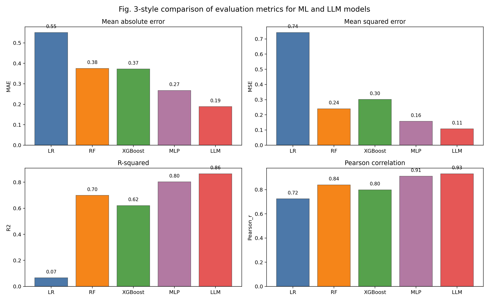
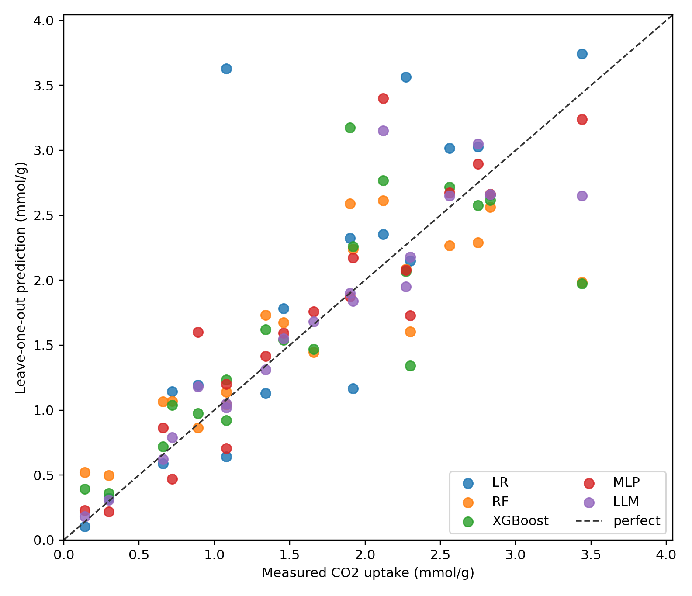
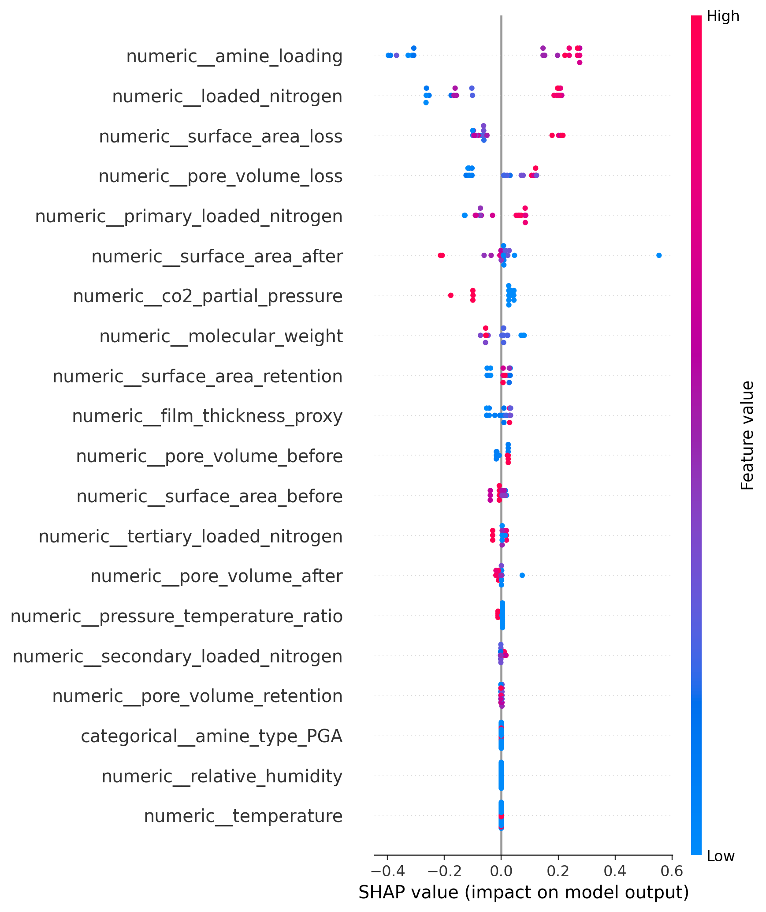

1. 代码库怎么运行
在 VSCode 中打开 E:\LLM2025\co2adsorb 文件夹，打开 run_experiment.py，点击右上角运行即可。也可以在终端运行：
E:\LLM2025\.venv\Scripts\python.exe run_experiment.py --llm-mode fallback
如果要尝试真实调用本地 Codex CLI：
E:\LLM2025\.venv\Scripts\python.exe run_experiment.py --llm-mode codex
如果 Codex CLI 无法在当前环境中执行，程序不会中断，会自动切换到可复现的上下文近邻回退模型，并在每个 llm_response_*.txt 中记录原因。
2. 运行逻辑流程
- 读取
data/co2_adsorbents.csv中的 19 条固体胺 CO2 吸附样本。 - 构造材料学特征：比表面积损失、孔体积损失、孔保留率、胺负载后的氮含量、伯/仲/叔胺有效氮等。
- 把数值特征做缺失值填补和标准化，把
amine_type做 One-Hot 编码。 - 使用 Leave-One-Out Cross-Validation。每次拿 18 条训练，留下 1 条测试，循环 19 次。
- 训练并比较 LR、RF、XGBoost、MLP 四个传统机器学习回归模型。
- 为 LLM 构造 in-context prompt：18 条带答案的训练例子 + 1 条待预测样本。真实 Codex CLI 可选调用；失败时使用上下文近邻回退。
- 计算 MAE、MSE、RMSE、R2 和 Pearson 相关系数，并保存 Fig. 3 风格柱状图。
- 用 XGBoost 在全数据上拟合一个解释模型，输出 SHAP summary plot 用于理解特征重要性。
3. 当前评估结果
| Model | MAE | MSE | RMSE | R2 | Pearson_r |
|---|---|---|---|---|---|
| LR | 0.5509 | 0.7425 | 0.8617 | 0.0660 | 0.7244 |
| RF | 0.3754 | 0.2395 | 0.4894 | 0.6988 | 0.8400 |
| XGBoost | 0.3724 | 0.3013 | 0.5489 | 0.6210 | 0.7984 |
| MLP | 0.2676 | 0.1570 | 0.3962 | 0.8025 | 0.9111 |
| LLM | 0.1884 | 0.1074 | 0.3278 | 0.8649 | 0.9315 |
LLM 来源统计
| Source | Count |
|---|---|
| codex_cli | 19 |
4. 输出文件
模型指标
outputs/model_metrics.csv
逐样本预测
outputs/predictions.csv
Fig. 3 风格图
outputs/fig3_model_metrics.png
预测散点图
outputs/prediction_comparison.png
SHAP 图
outputs/shap_summary.png
LLM Prompt
outputs/llm/llm_prompt_S01.txt 等
5. Fig. 3 风格结果图

6. 预测值与真实值

7. SHAP 教学解释
SHAP 图解释的是 XGBoost 模型在当前数据上如何使用特征。横轴越远离 0，说明该特征对预测的推动越强；颜色表示特征值大小。注意这不是严格因果结论，因为当前只有 19 条样本，更多是教学和方法复现。

8. 五类模型怎么理解
LR 是线性回归，假设吸附量可以由特征线性相加得到，优点是简单可解释，缺点是难表达非线性。
RF 是随机森林，用多棵决策树平均预测，能处理非线性和特征交互，小数据上相对稳健。
XGBoost 是梯度提升树，逐步修正前一轮模型误差，常用于表格数据，论文类实验中很常见。
MLP 是多层感知机神经网络，理论表达能力强，但 19 条样本很少，容易受随机性和过拟合影响。
LLM 不是重新训练权重，而是把材料背景、训练例子和待预测样本写进 prompt，让模型做 in-context learning。这里保留了本地 Codex CLI 调用接口。
9. 为什么不需要 __pycache__
__pycache__ 是 Python 自动生成的字节码缓存，只是为了加快下次导入速度，不是源码，也不是实验结果。它不需要提交或交给老师，因此本项目的 .gitignore 已经排除了它。
10. 论文对应关系
参考论文：Shuangjun Li 等，Methodology for predicting material performance by context-based modeling: A case study on solid amine CO2 adsorbents，Energy and AI, Volume 20, May 2025, Article 100477, DOI: 10.1016/j.egyai.2025.100477。
本代码复现的是论文思想：用传统 ML 与 LLM 上下文建模比较 CO2 吸附量预测误差，并用 SHAP 分析特征贡献。由于原仓库没有论文完整数据，本项目使用原仓库 19 条示例数据，所以结果只能作为课程复现和学习模板，不能当作论文数值完全复刻。